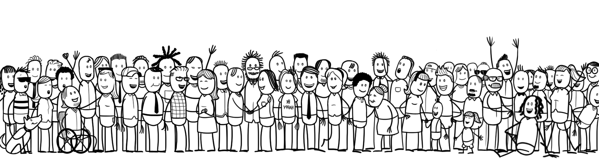

Friendly Societies
"Friendly Societies" ist ein weltweites Bündnis aus kleinen Gemeinschaften zur gegenseitigen Unterstützung in Notlagen. Es basiert auf Eigenverantwortung, Vertrauen und freiwilliger Solidarität.
Ideale
Unsere Motivation ist die gegenseitige Hilfe in Notlagen, basierend auf folgenden gemeinsamen Idealen:
- Aus einer freien, persönlichen Entscheidung heraus finden sich mündige, verantwortungsbewusste Menschen in einer Gemeinschaft zusammen.
- Diese Wahlgemeinschaft bildet den Rahmen in dem gemeinschaftliches Handeln aus einem individuellen Impuls heraus geübt und gelebt wird.
- Man bringt ein wahres und waches Interesse an seinen Mitmenschen mit.
- Die Gemeinschaft achtet die individuelle Andersartigkeit und Souveränität jedes Einzelnen, schützt die Privatsphäre und respektiert Privateigentum sowie unterschiedliche Vermögensverhältnisse.
- Der Einzelne erkennt die Ziele der Gemeinschaft an und trägt zu deren Umsetzung bei.
- Wir helfen uns in Notlagen und schwierigen Lebenssituationen, bei der Verbesserung von Lebensbedingungen und sind uns Unterstützung beim persönlichen Lebensweg.
Die gegenseitige Hilfe in Notlagen ist zugleich Bedürfnis und Aufgabe eines jenden Einzelnen.
Soziale Sicherheit entsteht in der menschlichen Begegnung durch freiwillige gelebte Solidarität. Wenn ein Mensch sich dem anderen zuneigt, sich für ihn interessiert, entsteht aus dieser Nähe ein Bewusstsein für Notlagen. In dem Maße, wie es gelingt, Notlagen wahrzunehmen und gemeinsam zu meistern, wächst das Vertrauen.
Die Stärke einer Gemeinschaft misst sich am Wohl der Schwachen und Bedürftigen. Die Gemeinschaft hilft dort, wo der Betroffene Hilfe braucht und gibt das, was der Betroffene nicht selber zu leisten vermag. Die Gemeinschaft tut nur das, was jedes Mitglied mitentschieden hat.
Dazu ist die regelmäßige Begegnung von Mensch zu Mensch und die gemeinsame Absprache nötig. Die Gemeinschaften sind so gebildet, dass jeder jeden genügend kennt.
Die Nothilfe besteht aus Anteilnahme, Hilfe und freiwilligen Schenkungen. Sicherheit entsteht durch das Vertrauen eines jeden Einzelnen in die Gemeinschaft, nicht durch Verträge. Es existieren keinerlei rechtliche Ansprüche.
Aufbau
Die Kooperation innerhalb der Friendly Societies gliedert sich in drei Ebenen:
Gemeinschaft
Friendly Societies sind übersichtliche kleine Gemeinschaften, jeweils bestehend aus etwa 10-20 Personen oder Familien welche einander kennen und ein gegenseitiges Vertrauen mitbringen und aufbauen.
Bündnis
Jeweils 10-30 dieser Gemeinschaften sind in einem eigenen Bündnis zusammengeschlossen. Jede teilnehmende Gemeinschaft ist vertreten durch eines ihrer Mitglieder.
Dachorganisation
Jedes Bündnis ist Teil einer gemeinsamen Dachorganisation.
Unsere Organisations- und Solidaritätsstruktur ist subsidiär sowie soziokratisch aufgebaut:
Subsidiär
Alles, was auf einer kleineren Ebene geleistet werden kann, wird nicht auf einer größeren Ebene geregelt - und alles, was eine kleinere Ebene nicht leisten kann, wird von einer größeren Ebene unterstützt.
Soziokratisch
Mitglieder einer jeden Ebene pflegen Entscheidungen im Konsens zu treffen. Sollte dies nicht möglich sein, dann muss Konsen-t erreicht werden (eine Lösung welche von allen getragen werden kann). Dies bedeutet darauf zu achten, dass die Minderheit Gehör findet und im Dialog eine Lösung gefunden wird, bis niemand mehr einen schwerwiegenden und begründeten Einwand im Sinne der gemeinsamen Ziele hat.
Jede Gemeinschaft bestimmt einen Vertreter als Mitglied innerhalb ihres Bündnisses. Und jedes Bündnis bestimmt einen Vertreter als Mitglied in der Dachorganisation.
Innerhalb der Gemeinschaften, innerhalb der Bündnisse und innerhalb der Dachorganisation werden alle Entscheidungen soziokratisch im Konsen-t getroffen.
Regeln
Diese Regeln stellen den aktuellen Stand dar. Gesellschaftliche Rahmenbedingungen können sich ändern und auch Friendly Societies wird laufend an Erfahrungen gewinnen und daraus lernen. Dies alles wird in einen kontinuierlichen Anpassungsprozess einfließen.
Mitgliedschaft
- Für eine Mitgliedschaft wird nicht aktiv geworben. Interessierte müssen aus freiem Impuls auf eine Gemeinschaft zukommen.
- Eine Aufnahme in eine Gemeinschaft wird nach einer Zeit des Kennenlernens im Konsens entschieden.
- Eine Mitgliedschaft endet automatisch sobald sich das betreffende Mitglied verabschiedet oder alle anderen Mitglieder der betreffenden Gemeinschaft dies nach ihren Regeln beschließen (theoretisch spätestens wenn Konsen-t über den Ausschluss eines Mitglieds besteht).
Eigenverantwortliches Verhalten
- An erster Stelle ist jeder für sich selbst verantwortlich und muss sich Gedanken über seine Risiken, finanzielles Polster, sein Einkommen und Ausgaben im Alter, etc. machen.
Jeder wird gefordert für sich einen finanziellen Plan zu haben oder zu machen. Eine Möglichkeit könnte die Teilnahme an einem freiwilligen Sparplan im Provident Fund der Friendly Societies Dachorganisation sein, ähnlich dem CPF in Singapur.
Das sind viele schwierige und oft auch mit Angst und Verdrängung verbundene Themen, welche bei Wunsch auch innerhalb der Gruppe behandelt werden können. - Ernstfälle lassen sich nicht immer vermeiden, wohl aber manche finanziellen Belastungen daraus für sich und in letzter Folge für die Gemeinschaft. So könnte es sinnvoll sein, dass manche finanziellen Risiken ausgelagert werden und die Gemeinschaft hierfür Verhaltensempfehlungen erarbeitet. Beispiele könnten sein: Abschluss einer privaten Haftpflichtversicherung, bei Familien mit nur einem Einkommen eine Risikolebensversicherung, eine Erwerbsunfähigkeitsversicherung, etc.
Finanzierung
- Es gibt zwar konkrete Empfehlungen, aber es bleibt jeder Gemeinschaft selbst überlassen in welcher Form sie finanzielle Hilfe untereinander organisiert - ob sie z.B. regelmäßige Einzahlungen vorsieht (z.B. fixe Monatsbeiträge oder einen kleinen Prozentsatz der persönlichen Haushaltsausgaben eines jeden Mitglieds bevorzugt), ob sie Rücklagen bildet, oder ob sie erst im Bedarfsfall tätig wird und dafür ein rasches Vorgehen ausgearbeitet und vereinbart hat.
- Jede Gemeinschaft muss einen konkreten schriftlichen Plan haben, der ihr erlaubt in eigenverantwortungsvoller Weise finanziell handlungsfähig zu sein. Dieser Plan ist für alle (innerhalb der Friendly Societies, auch außerhalb der eigenen Gemeinschaft) ersichtlich und jedes Mitglied verpflichtet sich, sich an den Plan seiner Gemeinschaft zu halten.
- Die Hauptlast bei Notfällen muss die eigene Gemeinschaft bewältigen, nicht das Bündnis oder die Dachorganisation.
- Damit jede Gemeinschaft auch bei größeren Notfällen oder bei Häufung von Notfällen - wenn sie selbst überfordert ist - Hilfe erhalten kann, werden beim jeweiligen Bündnis gemeinsame Rücklagen gebildet.
Es bleibt dem jeweiligen Bündnis überlassen wie seine Gemeischaften dies umsetzen. In der Regel werden sie je nach Größe, gesellschaftlichen Lebensbedingungen und eingetretener Notfälle eine bestimmte Höhe an Bündnis-Rücklagen anstreben. Daran beteiligt sich jede Gemeinschaft je nach Größe mit laufenden Beiträgen. - 10% der Bündnis-Zuflüsse werden an die Dachorganisation weitergeleistet, als ein letztes gemeinsames Polster aller Bündnisse. Der überwiegende Teil der Mittel soll allerdings bei den Bündnissen verbleiben, d.h. nahe bei ihren Leistern.
Hilfe
- Gemeinschaftshilfe setzt dort ein, wo dem betroffenen Einzelnen etwas fehlt, was notwendig ist und das er nicht aus eigener Anstrengung aufbringen kann. Dazu stellt er ein Hilfsgesuch oder seine Gemeinschaft kommt auf den Notleidenden zu.
- Hilfe kann finanzieller oder nicht-finanzieller Natur sein.
- Seine Gemeinschaft entscheidet daraufhin im Konsen-t ob sie seiner Bitte um Hilfe nachkommt. Das Ziel der Gemeinschaftshilfe ist immer die Linderung einer konkreten individuellen Notsituation.
- Bei finanzieller Unterstützung trägt die betroffene Gemeinschaft die Kosten. Fühlt sie sich dabei überfordert, kann sie sich an ihr Bündnis wenden und dort um Hilfe bitten.
- In extremen Situation, wenn auch das betreffende Bündnis sich überfordert fühlt, kann es sich für organisatorische Unterstützung an die Dachorganisation wenden um alle anderen Bündnisse um Hilfe zu bitten.
Die Dachorganisation selbst verfügt nur über geringe eigene finanzielle Mittel als aller letztes Polster. - Es gibt von keiner Stelle einen Rechtsanspruch auf Hilfe (es ist vereinbart, dass Art und Umfang der Hilfeleistung nicht einklagbar sind). Alle Leistungen erfolgen in Form einer Schenkung und sind damit freiwillig.
Weitere Möglichkeiten und Projekte
Versicherung
- Einige Ziele lassen sich bequemer über Versicherungsprodukte erreichen, statt eine Solidargemeinschaft um Hilfe bitten zu müssen.
Bei ausreichender Größe könnte es eines Tages für die Mitglieder Vorteile geben, bestimmte finanzielle Risiken nach streng versicherungsmathematischen Vorgaben über Friendly Societies abdecken zu können (z.B. Hinterbliebenenrente, Erwerbsunfähigkeitsrente).
Provident Fund
- An der Möglichkeit für einen freiwilligen Sparplan für Altersvorsorge und Gesundheit (ähnlich dem CPF in Singapur) wird gearbeitet.
Hinweise
Eine "Gemeinschaft zur gegenseitigen Unterstützung bei Notfällen" kann sehr viele Schicksalsschläge abfangen, weil Menschen von sich aus mitfühlend und solidarisch sind. Es ist momentan aber nicht als Lösung oder Ersatz für eine eigenverantwortliche Alters- und Gesundheitsversorgung gedacht und auch nicht geeignet. Aber wir arbeiten daran.
Vieles hier wurde inspiriert durch Artabana (die Finanzierung des Gesundheitswesens auf der Grundlage von Eigenverantwortung und Solidarität).
Wie kann ich zu euch dazukommen?
Du kannst der nächstgelegenen Gemeinschaft schreiben und fragen, ob sie noch offen ist und Interesse hat. Falls es in deiner Nähe noch keine Gemeinschaft gibt, dann starte du diese und wir finden ein Bündnis für dich.
PGP Public Key (fingerprint, checksum)
Links
- Video, Anton Howes
- Friendly society, Mises Institute